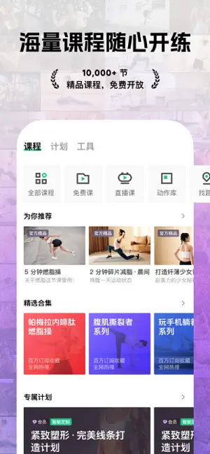
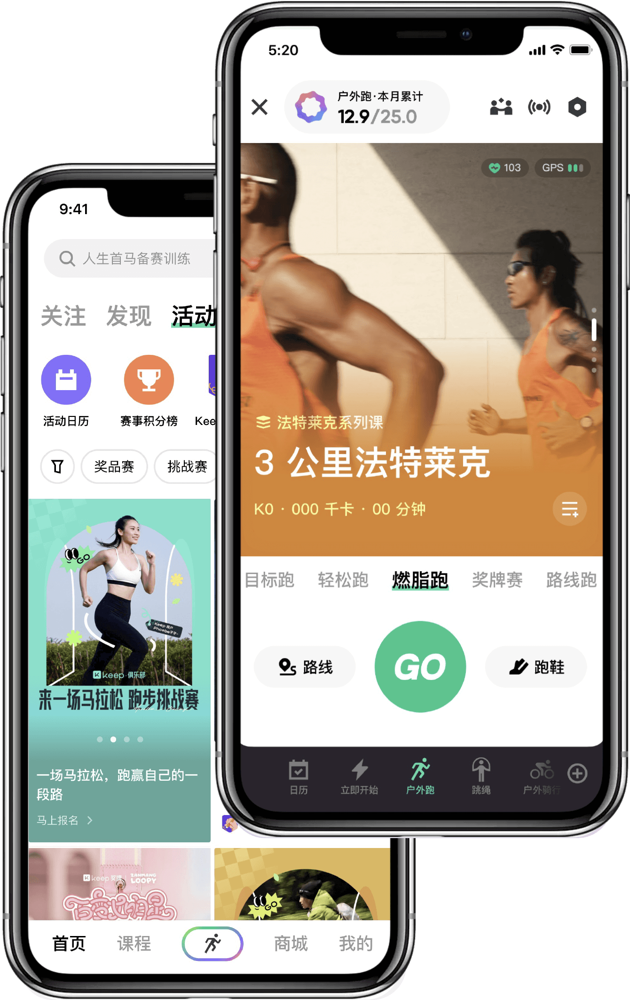

Keep 安卓上手教程：从零到第一次跑完一次 AI 教练带练
安卓用户第一次装 Keep 就懵？教程带你五步走完：安装注册、选第一节课、AI 教练开练、数据回看，以及三个新手必踩的坑。
打开 Keep，点了首页的「跑步」按钮，结果手机震了一下说「权限没开」——这大概是九成安卓新人第一次用这款运动应用时遇到的第一个卡点。别急着删掉，跟着下面的步骤走一遍，十五分钟内你能完成第一次有教练带的训练，也能搞清楚 AI 教练到底帮你做了什么。
准备工作
在动手之前确认三件事：你手上是一台安卓手机（iOS 版界面略有差异，本教程以安卓版本为准）；系统版本在 Android 8.0 以上（太旧的版本部分运动传感器会受限）；手机里留至少 500MB 空间给课程缓存和运动数据。想体验这套 AI 教练带练流程，先去 Keep 的官网拿到最新稳定版安装包，也可以直接走官方下载入口，beta 版偶尔会闪退。
装完第一次打开，Keep 会依次索要通知、位置、身体传感器三项权限。每一项都选允许——通知是 AI 教练的每日提醒，位置是户外跑步的 GPS 轨迹，身体传感器直接影响运动数据的精度。第一次拒绝之后要手动去系统设置里开，反而更麻烦。
第一步：注册与初始设定
注册可以用手机号一键登录，也支持微信第三方账号绑定。登录后应用会弹出一份简短的问卷调查：性别、身高体重、每周运动频次、目标（减脂 / 增肌 / 跑步入门 / 灵活训练）。
别跳过这份问卷——后面 AI 教练给你排的课表、推荐的课程强度，全靠这几项算出来的。填完之后进入首页，底部四个 Tab：课程 / 运动 / 我的 / 社区。

第二步：选第一节课
底部点「课程」Tab，你会看到顶部有一排分类筛选按钮：力量、有氧、跑步、瑜伽、搏击、舞蹈……往下滑是根据你刚才填的目标推的推荐卡片。
新手第一节课别贪多，找带「入门」标签、时长 15~20 分钟的就行。比如选一节「跑步入门 15 分钟」，点进去是课程详情页：有完整动作预览、难度标记、适用人群说明，下方是「开始训练」按钮。
点开始之前别急，右下角有个「下载到本地」——建议先下好再开练，运动中网络不稳定的话会自动暂停课程音频，打断节奏。缓存一次之后这节课随时能离线开。
第三步：AI 教练带练
进入课程后手机会切到横屏模式，AI 教练的合成语音开始引导。全程跟着语音指令做动作，屏幕下方实时显示当前心率、时长、消耗热量三项数据。
这里是 Keep 安卓版比较好用的一点：如果你戴的是蓝牙心率带或智能手表，它会在课程中段自动从设备拉取实时心率，比纯手机传感器准得多。

训练全程不用手动操作——暂停、切下一组、结束结算全是自动触发。完训后会弹出一张数据卡片，显示本次的时长、里程、消耗、平均心率，AI 教练还会给一句简短评价：「心率维持在有氧区间，继续保持」或者「后半段强度掉了，下次注意节奏」。
第四步：数据回看
回到「我的」Tab，中间位置有一块「历史运动」，点进去能看到所有训练记录。按课程类型、时长、消耗筛选都行。
对于想长期练的人，建议每周日花五分钟翻一遍这一周的数据，看看有没有哪几次心率明显偏低（说明划水了），或者时长/强度突然掉下来（可能是那天状态不好，下周排课要降一档）。AI 教练的周报表也是在这里看的——它会根据这一周的表现自动调整下一周的课表强度。
新手必踩的三个坑
坑一：会员扣费渠道混了，取消找不到入口
Keep 的会员在安卓端至少有三种扣费路径：安卓应用商店内购、微信/支付宝站内自动扣款、厂商商店的订阅。结论只有一个：在哪买的就在哪取消。
比如你用微信付款签约了连续包月，取消要打开微信 → 我 → 服务 → 右上角三个点 → 自动扣款，找到 Keep 的协议点解约。去应用里找「会员管理 → 取消续费」只会跳一个跳转链接，根本走不通。这个问题社区里搜「怎么取消续费」，一半帖子是同一条，具体扣费规则和退款流程可以去Keep文档查。
坑二：跑步轨迹暴露家/公司位置
第一次发社区动态时别急着点「分享到动态」按钮。Keep 安卓版的轨迹默认是公开可见的，如果你从家出发跑到公司，整条轨迹会完整出现在动态里。
在「我的 → 设置 → 隐私」里找到「运动轨迹」这一项，开启「起点模糊」。功能是把轨迹起点的精确地址替换成一个大致区域（比如只显示「朝阳区望京」），跑完之后动态里的位置信息就不会被扒得一干二净。
坑三：线上赛事选档贪大，完赛不了又退钱无门
Keep 经常联合马拉松赛事搞线上奖牌活动，报名费几十块，完赛给实体奖牌寄到家。听起来很美，但报名前注意三个细节：
- 报名费不退——没跑完也不会退；
- 档位选 10KM 以上之前先测一次自己的日常跑步里程；
- 赛事有明确起止日期，别在最后一天才想起来报名。
很多新手一口气报了半马档（21KM），完赛窗口期又只有两周，最后跑不完奖牌也没有、钱也退不了。实在想凑个热闹，选 3KM 或 5.5KM 的虚拟奖牌档就好，只要几块钱甚至免费，跑慢一点也能完赛。

进阶：往下还能玩什么
跑顺了之后可以试试几个进阶方向：用训练计划功能让 AI 教练按目标（备赛半马、减脂 10kg）排 8~12 周的课表，报名社区里的免费线上挑战赛（徽章党收集控的乐园），或者把数据同步到 Google Fit / 小米运动看跨应用的完整统计。Android 端还有一个隐藏小功能：在「运动」Tab 下拉到底部的「更多工具」里有姿势跑法的 AI 分析，上传一段跑步视频就能拿到姿态评分——这个是 iOS 端到现在还没有的专属福利。
Keep 本身是一个比较成熟的运动内容平台，课程库和教练资源都在安卓端保持同步，很多功能细节在中文资料里比英文原版解释得更清楚。如果你打算长期用，建议先从季卡开始，体验两三个月再决定要不要续年卡。
我把这套资料同步维护在三个代码仓库里方便随时查阅：GitHub 主仓库、国内访问友好的Gitee 镜像、以及GitCode 的第三份备份——三份仓库的目录结构完全一致，找到安卓版下的 Keep 文件夹就能看到完整的文档和素材。